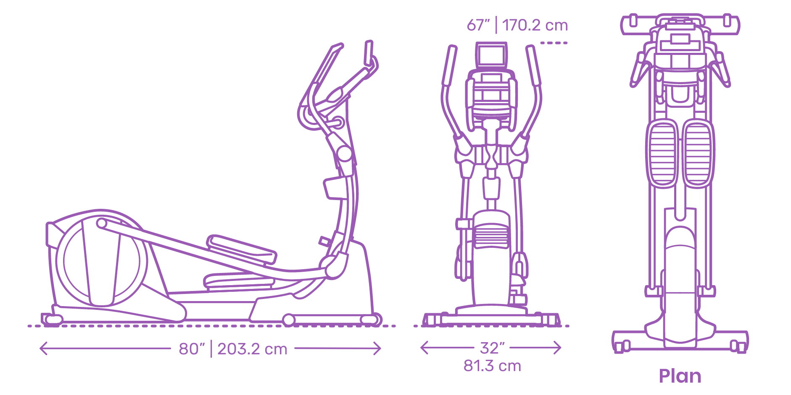

Welcome to FitLife Fitness and Training Center!!
Cross Trainer
Commit to be fit!
Cross trainer features an easy to fold and roll away structure, iFit Coach technology with
in-built workout programs that you can select according to your training needs. The machine also spots a
power-adjustable incline that trainers can use to target specific muscle groups and 22 resistance settings
adjustable to suit your training needs.
SPECIFICATIONS:

Pedal backwards to boost your thigh tone:
If you want to challenge your balance, improve your agility.
Give your quads a workout,give backwards pedalling a go.
You’ll immediately feel the difference as
your body changes the way it uses its muscles to work.
Tip: For a real thigh burner, let go of the handles and squat down into your legs.
Add some intervals to boost your fitness:
To add intervals to your cross trainer workout, simply add periods of faster pedalling.
After a five-minute warm-up, pedal for one minute as fast as you can.
Use the next two to three minutes to recover at a normal pace, then repeat.
As you get fitter, you can increase the amount of time you spend pedalling at
top speed.
Increase the resistance to improve your strength:
Higher the resistance, the more effort your body needs to exert.
The more strength you build and the more kilojoules you burn.
Use the next two to three minutes to recover at a normal pace, then repeat.
So up that dial and keep going!
Drop your arms to work your core:
By strengthening your core muscles – the abdominals, lower back, thoracic and cervical region.
By letting go of the handles, you force yourself to
engage your abdominal and core muscles.
Push and pull on the handlebars for upper body toning:
To tone your arms, chest, shoulders and back, simply grab onto the handlebars, stop using your legs to
pedal, and begin pushing and pulling with your arms to power the machine.
Ensure you keep a straight back to
avoid injury.
You may have to drop the resistance to do so.
The push motion will work your chest and triceps
more, while the pull motion will give your biceps, shoulders and back more of a workout.
Intersperse two to
three intervals of upper body training throughout your workout for the best results.